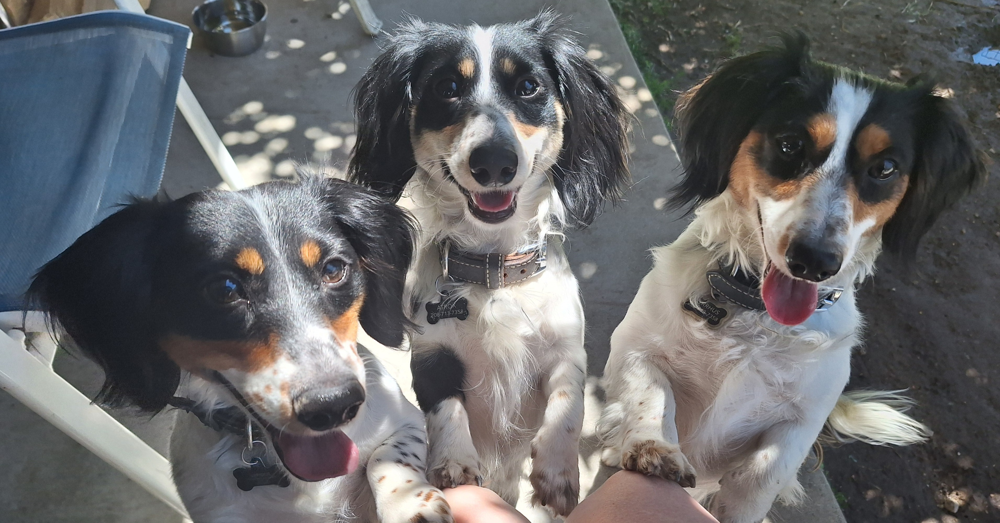

About Us
A family-owned dog waste removal service proudly serving Boise, Idaho.

Poop Scoop Detail is a family-owned and operated dog waste removal service based in Idaho. We built this business with one goal in mind: to provide reliable, thoughtful, and high-quality pet waste removal for our local community.
Our family lives and works in Idaho, and our household includes three Dachshunds who are very much part of our daily life.
We take pride in using environmentally conscious methods and carefully selected products that are labeled by manufacturers as safe for pets and children. We believe a clean yard should never come at the cost of the environment or your family's well-being.
With experience in small business ownership and ongoing studies in Business Administration, we are committed to providing dependable service, clear communication, and a customer experience we would expect for our own home.
Whether you need a one-time cleanup or ongoing service, we’re here to help and happy to tailor our services to your needs.